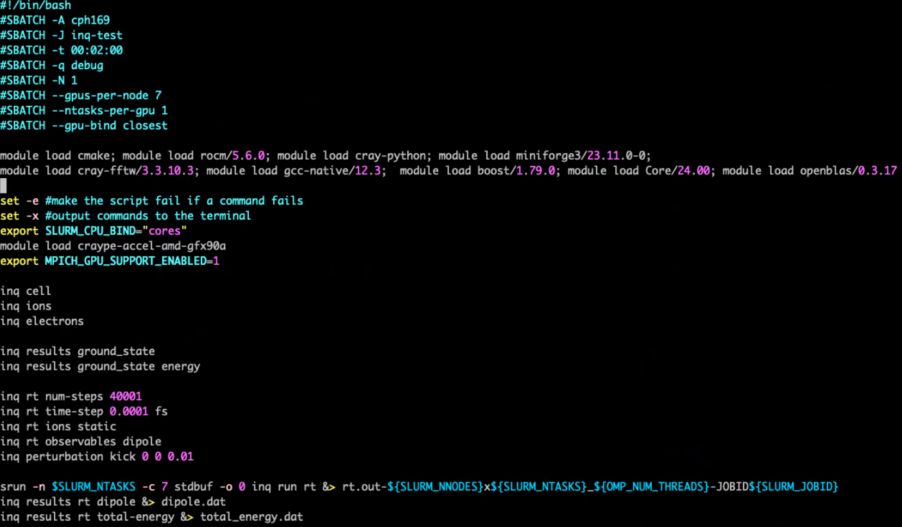
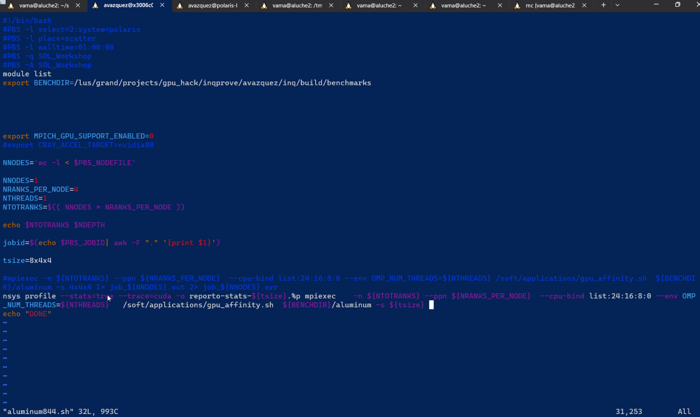
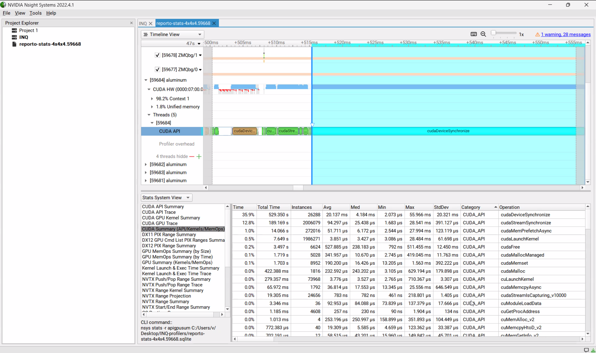

2. Compilation and installation
2.1. Compiling and running on a local computer
2.1.1. Install dependencies and setup environment
For example in Ubuntu 22.04:
sudo apt install git cmake libblas-dev libboost-filesystem-dev libboost-serialization-dev liblapack-dev libopenmpi-dev pybind11-dev # or libmpich-dev
For example, in Fedora 37, systemwide:
sudo dnf install hdf5-devel lapack-devel ...
and for the session:
module load mpi
2.1.2. Clone repository
git clone --recursive git@gitlab.com:npneq/inq.git # or https://gitlab.com/npneq/inq.git without account
cd inq
2.1.3. For CPU-only system
cmake .. --install-prefix=$HOME/.local -DCMAKE_BUILD_TYPE=Release
make -j 12
make install
ctest -j 6 --output-on-failure
If you prefer to compile with another C++ compiler, prefix the command with CXX=clang++ ..., for example.
2.1.4. For an Nvidia-GPU system (with NVCC 11.x)
mkdir build.cuda && cd build.cuda
cmake .. --install-prefix=$HOME/.local -DCMAKE_BUILD_TYPE=Release -DCMAKE_CUDA_COMPILER=/usr/local/cuda/bin/nvcc -DENABLE_CUDA=1 -DCMAKE_CUDA_ARCHITECTURES=75 # -DCMAKE_CUDA_HOST_COMPILER=g++-12.2 if necessary
cmake --build . --parallel 10
ctest -j 10 --output-on-failure
For Pascal architecture 6.1, (e.g. NVIDIA GeForce GTX 1060 Mobile) use -DCMAKE_CUDA_ARCHITECTURES=61.
For Volta architecture 7.2 (e.g. Quadro GV100) use -DCMAKE_CUDA_ARCHITECTURES=72.
For Turing architecture 7.5 use -DCMAKE_CUDA_ARCHITECTURES=75.
See [[Table of relevant GPU models]] for more details.
2.1.5. Specific computers
god:
CUDACXX=/usr/local/cuda/bin/nvcc ../configure --prefix=$HOME --enable-cuda --disable-debug -DCMAKE_CUDA_ARCHITECTURES=72(2023) cuk (Ubuntu):
cmake .. --install-prefix=$HOME -DENABLE_CUDA=1 -DCMAKE_CUDA_ARCHITECTURES=61 -DCMAKE_CUDA_HOST_COMPILER=g++-11 -DCMAKE_CUDA_COMPILER_LAUNCHER=ccache(2023) pro (PopOS!):
cmake .. --install-prefix=$HOME -DENABLE_CUDA=1 -DCMAKE_CUDA_ARCHITECTURES=75 -DCMAKE_CUDA_HOST_COMPILER=g++-10 -DCMAKE_CUDA_COMPILER_LAUNCHER=ccache(2023) pro:
Fedora 38:
module load mpi ; cmake .. --install-prefix=$HOME/.local -DCMAKE_BUILD_TYPE=Release -DCMAKE_CUDA_COMPILER=/usr/local/cuda/bin/nvcc -DENABLE_CUDA=1 -DCMAKE_CUDA_ARCHITECTURES=75 -DCMAKE_CUDA_HOST_COMPILER=g++-12.2Fedora 38 CPU/MKL:
module load mpi ; cmake .. --install-prefix=$HOME/.local -DCMAKE_BUILD_TYPE=Release -DCMAKE_CUDA_COMPILER=/usr/local/cuda/bin/nvcc -DENABLE_CUDA=1 -DCMAKE_CUDA_ARCHITECTURES=75 -DCMAKE_CUDA_HOST_COMPILER=g++-12.2 -DBLA_VENDOR=Intel10_64lpUbuntu 23.10 with NVHPC 23.7
module load /opt/nvidia/hpc_sdk/modulefiles/nvhpc/23.7
CC=gcc CXX=g++ FC=gfortran cmake ../ --install-prefix=$HOME -DCMAKE_BUILD_TYPE=Release -DENABLE_CUDA=yes -DCMAKE_CUDA_HOST_COMPILER=g++-11 -DCMAKE_CUDA_ARCHITECTURES="70"
(2024) studiobook
Ubuntu 24.04:
cmake .. -G "Ninja Multi-Config" --install-prefix=$HOME/.local -DENABLE_CUDA=1 -DCMAKE_CUDA_ARCHITECTURES=75 --fresh
2.1.6. Manually setting utilization of multiple GPU with MPI
Although a professionally maintained cluster should set process-gpu affinity correctly, this is not the case for home brewed boxes with multiple GPUs.
See slide 53: https://on-demand.gputechconf.com/gtc/2018/presentation/s8314-multi-gpu-programming-with-mpi.pdf
2.1.7. Installing GCC for CUDA
Specific versions of CUDA requires specific versions of GCC. For example, CUDA 12 requires at most GCC 12 (i.e. GCC 13 will not work) and CUDA 11 requires at most GCC 11.
If the default GCC compiler is not the correct one you can choose a different version if it is available, -DCMAKE_CUDA_HOST_COMPILER=g++-12.2 To force the utilization of newer versions of GCC pass the option -DCMAKE_CUDA_FLAGS=”–allow-unsupported-compiler” Alternatively you can install the correct version of gcc with a package manager, or manually
(Fedora doesn’t provide alternative GCC compilers). This is a recipe using Spack package manager:
Install Spack:
git clone -c feature.manyFiles=true https://github.com/spack/spack.git
source spack/share/spack/setup-env.sh
Install GCC from Spack
spack info gcc
spack install gcc@11.3.0
Use g++ from the spack version
spack load gcc@11
which g++
gcc --version
~/spack/opt/spack/linux-fedora38-skylake/gcc-13.1.1/gcc-11.3.0-4dacqeva26v3hkjuv6j7ia2wqiet5eq4/bin/g++
[correaa@proart ~]$ g++ --version
g++ (Spack GCC) 11.3.0
Fedora 38 and 39 ship with GCC 13 which is not supported by CUDA 12 (that requires GCC 12). In that case GCC can be installed from Fedora 37
sudo dnf --releasever=37 --installroot=/fc37 install gcc g++
/fc37/bin/g++ --version
cmake ... -DBoost_ROOT=/fc37/usr -DCMAKE_CUDA_HOST_COMPILER=/fc37/bin/g++ -DCMAKE_CUDA_COMPILER=/opt/nvidia/hpc_sdk/Linux_x86_64/2023/cuda/bin/nvcc
2.1.8. Mac OS 14
In principle there is no GPU support for INQ in Mac, INQ will use the default Apple linear algebra libraries.
brew install cmake gfortran open-mpi pkg-config fftw boost dumpy
git clone --recursive git@gitlab.com:npneq/inq.git # or https://gitlab.com/npneq/inq.git
cd inq
mkdir build
cmake -S . -B build --install-prefix=$HOME
cmake --build build --parallel --target install
OMPI_MCA_btl=^tcp ctest --test-dir build --output-on-failure
2.1.9. Recover from Nvidia device error
sudo fuser --kill /dev/nvidia-uvm
sudo while fuser --silent /dev/nvidia-uvm; do sleep 1; done
sudo echo "$0 $@: reload nvidia_uvm"
sudo modprobe -r nvidia_uvm && modprobe nvidia_uvm
2.2. Compiling INQ on Supercomputing Clusters
Download the code:
git clone --recurse-submodules https://gitlab.com/npneq/inq.git
cd inq
2.2.1. Compiling on Perlmutter at NERSC
See new instructions here. For old instructions see page history (button above).
2.2.2. Compiling on LBNL Generic Linux Supercluster
git clone git@gitlab.com:npneq/inq.git
cd inq
git submodule update --init --recursive
mkdir build
cd build
module load gcc/7.4.0 openmpi/2.0.2-gcc cmake/3.17.0
Download and build lapack-3.9.0 with blas, boost_1_73_0 and fftw-3.3.8
Set environment variables BLAS_LIBRARIES, LAPACK_LIBRARIES, FFTW_ROOT and Boost_INCLUDE_DIR to point to your local install locations of these libraries
cmake -DBLAS_LIBRARIES="$BLAS_LIBRARIES" -DLAPACK_LIBRARIES="$LAPACK_LIBRARIES" -DBoost_INCLUDE_DIR="$Boost_INCLUDE_DIR" -DCMAKE_INSTALL_PREFIX=$PWD ..
make
make install
##Example script
#!/bin/bash
module purge
module load gcc/7.4.0 openmpi/2.0.2-gcc cmake/3.17.0
export BLAS_LIBRARIES="-L/global/scratch/dasc/Projects/NPNEQ/INQ_HOME/lapack-3.9.0 -lblas"
export "LAPACK_LIBRARIES=-L/global/scratch/dasc/Projects/NPNEQ/INQ_HOME/lapack-3.9.0 -llapack -lblas -lgfortran"
export FFTW_ROOT="/global/scratch/dasc/Projects/NPNEQ/INQ_HOME/fftw-3.3.8"
export Boost_INCLUDE_DIR="/global/scratch/dasc/Projects/NPNEQ/INQ_HOME/boost_1_73_0"
export PKG_CONFIG_PATH=$PKG_CONFIG_PATH:$FFTW_ROOT
../configure --prefix=/global/scratch/dasc/Projects/NPNEQ/INQ_HOME/tv-inq/gcc7 --pass-thru -DBLAS_LIBRARIES="$BLAS_LIBRARIES" -DLAPACK_LIBRARIES="$LAPACK_LIBRARIES" -DBoost_INCLUDE_DIR="$Boost_INCLUDE_DIR"
export LD_LIBRARY_PATH=$LD_LIBRARY_PATH:$SCRATCH/Projects/NPNEQ/INQ_HOME/boost_1_73_0/lib:$SCRATCH/Projects/NPNEQ/INQ_HOME/fftw-3.3.8/lib
###Using totalview on Lassen
(1) Compile the code with debugging options "-g -O0"
(2) In your cpp code add the following include line:
#include "multi/adaptors/totalview.hpp"
(3) module load totalview
(4) module disp totalview to figure out the install location of totalview
(5) add the following to the include path on the compile+link line:
inc++ -g -O0 -I/usr/tce/packages/totalview/toolworks/totalview.2020.3.11/include -I/usr/tcetmp/packages/boost/boost-1.70.0/include nitrogen.cu -o nitrogen_tv
totalview
(6)srun -a -n 2 ./nitrogen_tv
2.2.3. Compiling on Frontera at TACC (FHJ, 9/26/22)
(optional) get the code
git clone git@gitlab.com:npneq/inq.git
cd inq
git submodule init
git submodule update
mkdir build
cd build
Fix this file:
Edit ../src/basis/containing_cube.hpp, change:
lo[idir] = std::clamp(lo[idir], grid.symmetric_range_begin(idir), grid.symmetric_range_end(idir));
hi[idir] = std::clamp(hi[idir], grid.symmetric_range_begin(idir), grid.symmetric_range_end(idir));
to
lo[idir] = std::max(lo[idir], grid.symmetric_range_begin(idir));
lo[idir] = std::min(lo[idir], grid.symmetric_range_end (idir));
hi[idir] = std::max(hi[idir], grid.symmetric_range_begin(idir));
hi[idir] = std::min(hi[idir], grid.symmetric_range_end(idir));
Configure, Compile:
module load gcc
module load mkl
module load fftw3
module load mvapich2-x
export BLA_VENDOR=Intel10_64lp
export CC="$(which gcc)"
export CXX="$(which g++)"
export FC="$(which gfortran)"
../configure --prefix=$PWD/../prefix/
make -j 16
make install
Running test jobs
Request interactive node: idev -t 00:30:00 -N 1 -n 56
Run
module load gcc
module load mkl
module load fftw3
module load mvapich2-x
ctest
Compiling and running on Frontier

2.2.4. ALCF Polaris
A. A. Correa, X. Andrade, Alvaro Mayagoitia, Abhishek Bagusetty 2023
You need your ALCF username and the OTP in the MobilePASS+ app.
$ ssh polaris.alcf.anl.gov
Clone the repository recursively, use HTTP link if you don’t have a gitlab account,
$ git clone --recursive git@gitlab.com:npneq/inq.git # or https://gitlab.com/npneq/inq.git
$ cd inq
$ mkdir build.debug; cd build.debug
Load the necessary modules,
module load cmake PrgEnv-gnu cray-fftw aocl boost cray-hdf5-parallel cudatoolkit-standalone
(These modules are necessary when compiling and running any inq-based code.)
Build the tests,
$ ../configure --prefix=$PWD/../install --enable-cuda --pass-thru \
-DCMAKE_CUDA_ARCHITECTURES=80 -DCMAKE_CUDA_FLAGS="$(CC --no-as-needed --cray-print-opts=cflags)" \
-DBLA_VENDOR=FLAME -DLAPACK_LIBRARIES=${AOCL_ROOT}/lib/libflame.so -DMPI_CXX_LINK_FLAGS='-fopenmp' \
-DNCCL_INCLUDE_DIRS=/soft/compilers/nvhpc/Linux_x86_64/23.1/comm_libs/nccl/include \
-DNCCL_LIBRARIES=/soft/compilers/nvhpc/Linux_x86_64/23.1/comm_libs/nccl/lib/libnccl.so
$ make install -j || make VERBOSE=1 # 4 minutes
Run the tests,
$ qsub -I -l walltime=0:60:00 -q debug -A gpu_hack -l select=1:system=polaris -l place=scatter -l filesystems=home:grand:eagle
(...wait for shell)
cd inq/build.debug
module load cmake PrgEnv-gnu cray-fftw aocl boost cray-hdf5-parallel cudatoolkit-standalone
NCCL_DEBUG="WARN" MPICH_GPU_SUPPORT_ENABLED=1 MPICH_GPU_MANAGED_MEMORY_SUPPORT_ENABLED=1 CRAY_ACCEL_TARGET=nvidia80 ctest --output-on-failure
Example output,
Start 1: pseudopod::unit_tests::::detect_format
1/168 Test #1: pseudopod::unit_tests::::detect_format .................... Passed 1.39 sec
Start 2: pseudopod::unit_tests::::element
2/168 Test #2: pseudopod::unit_tests::::element .......................... Passed 0.03 sec
Start 3: pseudopod::unit_tests::::erf_range_separation
...
Start 168: inq::speed_tests::copies
168/168 Test #168: inq::speed_tests::copies .................................. Passed 0.82 sec
100% tests passed, 0 tests failed out of 168
Total Test time (real) = 169.00 sec
For benchmark and production:
$ mkdir ~/inq/build.release ; cd ~/inq/build.release
$ ../configure --prefix=$PWD/../install --enable-cuda --disable-debug --pass-thru \
-DCMAKE_CUDA_ARCHITECTURES=80 -DCMAKE_CUDA_FLAGS="$(CC --no-as-needed --cray-print-opts=cflags)" \
-DBLA_VENDOR=FLAME -DLAPACK_LIBRARIES=${AOCL_ROOT}/lib/libflame.so -DMPI_CXX_LINK_FLAGS='-fopenmp' \
-DNCCL_INCLUDE_DIRS=/soft/compilers/nvhpc/Linux_x86_64/23.1/comm_libs/nccl/include \
-DNCCL_LIBRARIES=/soft/compilers/nvhpc/Linux_x86_64/23.1/comm_libs/nccl/lib/libnccl.so
$ make install -j || make VERBOSE=1 # 4 minutes
Example jobs script with profiling and gpu binding:
#!/bin/bash
#PBS -l select=2:system=polaris
#PBS -l place=scatter
#PBS -l walltime=01:00:00
#PBS -q SDL_Workshop
#PBS -A SDL_Workshop
### NO NCCL SUPPORT
module list
export BENCHDIR=/lus/grand/projects/gpu_hack/inqprove/avazquez/inqcblas/build/benchmarks
export MPICH_GPU_SUPPORT_ENABLED=0
#export CRAY_ACCEL_TARGET=nvidia80
NNODES=`wc -l < $PBS_NODEFILE`
NNODES=1
NRANKS_PER_NODE=4
NTHREADS=1
NTOTRANKS=$(( NNODES * NRANKS_PER_NODE ))
echo $NTOTRANKS $NDEPTH
jobid=$(echo $PBS_JOBID| awk -F "." '{print $1}')
tsize=4x4x4
#### RUNNING
mpiexec -n ${NTOTRANKS} --ppn ${NRANKS_PER_NODE} --cpu-bind list:24:16:8:0 --env OMP_NUM_THREADS=${NTHREADS} /soft/applications/gpu_affinity.sh ${BEN
CHDIR}/aluminum -s ${tsize}
#### PROFILING
nsys profile --stats=true --trace=cuda -o reporto-stats-cblas-${tsize}.%p mpiexec -n ${NTOTRANKS} --ppn ${NRANKS_PER_NODE} --cpu-bind list:24:16:8:0 --e
nv OMP_NUM_THREADS=${NTHREADS} /soft/applications/gpu_affinity.sh ${BENCHDIR}/aluminum -s ${tsize}
Example of profiling work, from Alvaro screen:


2.2.5. LLNL Sierra/Lassen
Environment
module load cuda/11 gcc/10 cmake/3.23
Configuration
rm -fr CMakeCache.txt CMakeFiles
cmake ../ --install-prefix=$HOME -DENABLE_CUDA=1 -DCMAKE_CUDA_ARCHITECTURES=70 -DCMAKE_CUDA_HOST_COMPILER=$CXX
Build, Install and Test
make -j
make install
lalloc 1 -qpdebug -W60
# wait
INQ_EXEC_ENV='lrun -n 1 -M "-mxm"' ctest --output-on-failure
Open a shell in a node
lalloc 1 -qpdebug -W60
#wait for shell
lrun -n 2 -M "-mxm" ./command
Running interactively
bsub -nnodes 1 -q pdebug -W 01:00 -I lrun -n 1 -M "-mxm" ./command
2.2.6. LLNL Tioga (AMD)
https://hpc.llnl.gov/hardware/compute-platforms/tioga
https://lc.llnl.gov/confluence/display/ELCAPEA
module reset
module load cce/16.0.1
module load rocm/5.6.0
module load python/3.10.8
export LD_LIBRARY_PATH=/opt/cray/pe/cce/16.0.1/cce-clang/x86_64/lib/x86_64-unknown-linux-gnu/:$CRAY_LD_LIBRARY_PATH:$LD_LIBRARY_PATH
rm -fr CMakeCache.txt CMakeFiles
cmake ../../ --install-prefix=$HOME \
-DENABLE_HIP=1 \
-DCMAKE_SYSTEM_NAME=CrayLinuxEnvironment \
-DCMAKE_HIP_ARCHITECTURES=gfx90a \
-DMPI_CXX_COMPILER=$MPICH_DIR/bin/mpicxx \
-DMPI_CXX_LINK_FLAGS="$PE_MPICH_GTL_DIR_amd_gfx90a $PE_MPICH_GTL_LIBS_amd_gfx90a"
2.2.7. OLCF Frontier (AMD)
You need your OLCF username and PIN + RSA token code set up to log in. Note that it can take about a month between signing up for an account and receiving your RSA token.
Download inq from the git repository if you haven’t done so:
git clone https://gitlab.com/npneq/inq.git
cd inq
git submodule update --init --recursive
Load the necessary modules:
module reset
module load cmake; module load rocm/5.6.0; module load cray-python; module load miniforge3/23.11.0-0;
module load cray-fftw/3.3.10.3; module load gcc-native/12.3; module load boost/1.79.0; module load Core/24.00; module load openblas/0.3.17
Note that these versions of rocm, boost, fftw, and openblas are not the most up-to-date versions on Frontier, and may need to be updated soon. To set the correct path environment variables, you must load these modules both when compiling and running inq.
Configure and install with cmake:
mkdir build
cd build
cmake ../ --install-prefix=$PWD -DENABLE_HIP=1 -DCMAKE_HIP_ARCHITECTURES=gfx90a -DCMAKE_CXX_STANDARD=17 -DMPI_CXX_LINK_FLAGS="$PE_MPICH_GTL_DIR_amd_gfx90a $PE_MPICH_GTL_LIBS_amd_gfx90a"
make -j || make VERBOSE=1
make install
Test linking for inq:
cd bin/
ldd inq
and for pinq:
cd python/
ldd _pinq.cpython-310-x86_64-linux-gnu.so
All links should exist, and versions, e.g. of rocm, should be consistent:
libhipfft.so => /opt/rocm-5.6.0/lib/libhipfft.so (0x00007f06337a2000)
libhipblas.so.1 => /opt/rocm-5.6.0/lib/libhipblas.so.1 (0x00007f0633734000)
libamdhip64.so.5 => /opt/rocm-5.6.0/lib/libamdhip64.so.5 (0x00007f063206b000)
Find below a job script for running inq tests. This script can be used as a template for running inq jobs in general.
Set -c=cpus_per_rs to 7 because Frontier GPU nodes contain 8 GPUs and 64 CPUs (physical cores with 2 hardware threads each), but 8 CPUs are reserved.
Setting stdbuf -o 0 helps ensure that job outputs are written in real time.
For production runs, use #SBATCH -p batch.
#!/bin/bash
#SBATCH -A cph169
#SBATCH -J inq-test
#SBATCH -t 00:30:00
#SBATCH -q debug
#SBATCH -N 1
#SBATCH --gpus-per-node 1
#SBATCH --ntasks-per-gpu 1
#SBATCH --gpu-bind closest
module load cmake; module load rocm/5.6.0; module load cray-python; module load miniforge3/23.11.0-0;
module load cray-fftw/3.3.10.3; module load gcc-native/12.3; module load boost/1.79.0; module load Core/24.00; module load openblas/0.3.17
set -e #make the script fail if a command fails
set -x #output commands to the terminal
export SLURM_CPU_BIND="cores"
module load craype-accel-amd-gfx90a
export MPICH_GPU_SUPPORT_ENABLED=1
INQ_EXEC_ENV="srun -c 7 stdbuf -o 0" ctest --output-on-failure --timeout 200 -V | tee ctest.sbatch.out
Testsuite results 12/20/2024:
99% tests passed, 2 tests failed out of 239
Total Test time (real) = 942.97 sec
The following tests FAILED:
72 - inq::unit_tests::hamiltonian::xc_term (Failed)
73 - inq::unit_tests::hamiltonian::zeeman_coupling (Failed)
2.2.8. NERSC Perlmutter (NVIDIA)
Your need your NERSC username and OTP + password set up to login. (eg. from iris.nersc.gov)
ssh perlmutter-p1.nersc.gov
Now download inq or inq_template from the git repository if you haven’t done it already.
Load the necessary modules,
module load cray-fftw cmake
These modules are necessary when compiling and running any inq-based code.
mkdir build
cd build
git submodule init
git submodule update
cmake ../ --install-prefix=`pwd`/../install -DENABLE_CUDA=1 -DCMAKE_CUDA_ARCHITECTURES=80 --fresh
make -j || make VERBOSE=1
make install
-DCMAKE_BUILD_TYPE=Debug -DCMAKE_CXX_FLAGS="-ldl -DBOOST_STACKTRACE_USEADDR2LINE -no-pie" is a cmake flag you may want to use while debugging. Errors may also be more traceable using c++ scripts or the command line interface than the python interface.
This should have installed the necessary files (main pseudopotentials) in the prefix directory and compiled the tests.
To check that the tests work, we can request an interactive session:
unset MPICH_GPU_SUPPORT_ENABLED
salloc --nodes 1 --qos interactive --gpus-per-task=1 --time 00:30:00 --constraint gpu --gpus 4 --account=m4409
(...wait for shell)
INQ_EXEC_ENV="srun -n 1 --gpus-per-task 1" ctest --output-on-failure
If everything goes well, you will see the output:
Test project /global/homes/c/correaa/inq/b2
Start 1: ctest_build_test_code
1/145 Test #1: ctest_build_test_code ............................... Passed 0.24 sec
Start 2: spglibtest
2/145 Test #2: spglibtest .......................................... Passed 0.29 sec
...
144/145 Test #144: tests::silicon_hartree_fock ......................... Passed 7.13 sec
Start 145: speed_tests::copies
145/145 Test #145: speed_tests::copies ................................. Passed 2.85 sec
100% tests passed, 0 tests failed out of 145
Total Test time (real) = 470.09 sec
If you see any error, please open and issue and paste as much information on the error as possible.
In the same way, test can be submitted as a batch job. This job script can be use as a basis for other inq-based jobs.
cat > inq.sbatch
#!/bin/bash
#SBATCH -A m4409
#SBATCH -q debug
#SBATCH -C gpu
#SBATCH -t 00:30:00
#SBATCH -N 1
#SBATCH --ntasks-per-node=1
#SBATCH --cpus-per-task=32
#SBATCH --gpus-per-task=1
module load cray-fftw cray-hdf5 cmake/3.24
export SLURM_CPU_BIND="cores"
#export MPICH_GPU_SUPPORT_ENABLED=1 # enable CUDA-aware MPI
INQ_EXEC_ENV="srun -n 1 --gpus-per-task 1" ctest --output-on-failure --timeout 200 -V | tee ctest.sbatch.out
Submit the job
sbatch inq.sbatch
watch -n 30 squeue
(General information to submit jobs: https://docs.nersc.gov/systems/perlmutter/running-jobs/)
To verify that GPUs are detected, look for line(s) like this in the output.
[2023-02-02 12:43:03.320] [electrons:SBm3gw] [info] process 0 has gpu id +KNjL8WNHzx9QQ9reEfvmQ
What is next? The easiest way to write your own inq-based program is to use inq_template.
2.2.9. Quartz
Environment
module load cuda/11 gcc/10 cmake/3.23
Configuration
rm -fr CMakeCache.txt CMakeFiles
cmake ../ --install-prefix=$HOME -DENABLE_CUDA=1 -DCMAKE_CUDA_ARCHITECTURES=70 -DCMAKE_CUDA_HOST_COMPILER=$CXX
Build, Install and Test
make -j
make install
lalloc 1 -qpdebug -W60
# wait
INQ_EXEC_ENV='lrun -n 1 -M "-mxm"' ctest --output-on-failure
Open a shell in a node
lalloc 1 -qpdebug -W60
#wait for shell
lrun -n 2 -M "-mxm" ./command
Running interactively
bsub -nnodes 1 -q pdebug -W 01:00 -I lrun -n 1 -M "-mxm" ./command
2.3. Compiling Parallel (MPI) HDF5 for INQ
./configure --enable-parallel --enable-cxx --enable-unsupported CC=mpicc CXX=mpic++ --prefix=...whatever...
2.4. CMake
This is a list of cmake options that are relevant for INQ / INQ template
option |
values |
description |
|---|---|---|
–fresh |
Run the cmake configuration from scratch, ignoring what’s already in the directory. We recommend you to always add this flag when calling cmake, especially when trying different configuration options. (This is only available from CMake 3.24 onwards, if you have a previous version you can get the same result by removing CMakeCache.txt and CMakeFiles. |
|
–install-prefix= |
The directory where INQ will be installed after compilation. This must be set and a place where the user is allowed to write. |
|
-DCMAKE_BUILD_TYPE= |
Release (default), Debug |
This sets the type of compilation of INQ. -DCMAKE_BUILD_TYPE=Release compile with maximum optimization and without debugging code, this is the fastest option that should be used for production runs. -DCMAKE_BUILD_TYPE=Debug add extra checks to ensure the code is running correctly, but it makes the code run slower. By default INQ is compiled in ‘Release’ mode. |
-DENABLE_CUDA=yes |
Enable compilation with CUDA. If this is set, INQ will try to run on an Nvidia GPU. Disabled by default. |
|
-DENABLE_NCCL=yes |
(Experimental) Use the NVIDIA NCCL library for communication. Disabled by default. |
Cmake is requirement to build INQ (even if hidden behind a ./configure script). Cmake handles INQ’s dependencies, some of which are pretty new (in particular CUDA 11).
In general Cmake must be newer than the libraries it handles. Therefore a recent version of Cmake (e.g. above 3.16) might be required. For reference Ubuntu 20.04 has cmake 3.16 and Fedora 31 has cmake 3.17.
If your system supports modules, you can
module avail cmake
module load cmake 3.17
There might be no option other than installing your own (and in your userspace).
wget https://github.com/Kitware/CMake/releases/download/v3.21.1/cmake-3.21.1-linux-x86_64.sh
sh ./cmake-3.21.1-linux-x86_64.sh --prefix=$HOME --skip-license
~/bin/cmake --version
The newer version of cmake will be in ~/bin/cmake. If you use the ./configure script then you have to specify the command used to invoke cmake:
CMAKE_CMD=~/bin/cmake ../configure ...
For other versions of cmake see https://cmake.org/download/
2.5. BOOST
2.5.1. Install BOOST libraries
From download:
cd ~/Downloads
wget https://dl.bintray.com/boostorg/release/1.73.0/source/boost_1_73_0.tar.gz
tar -zxvf boost_1_73_0.tar.gz
cd boost_1_73_0/tools/build
./bootstrap.sh
./b2 install --prefix=$HOME/.local
~/usr/bin/b2 --build-dir=/tmp/build-boost toolset=gcc install
Includes will be in ~/Downloads/boost_1_73_0/boost, library binaries will be in ~/Downloads/boost_1_73_0/stage/lib.
From GitHub
git@github.com:boostorg/boost.git
cd boost
./bootstrap.sh --prefix=$HOME/.local
time ./b2 -j 100 cxxflags='-fPIC -O3' | tee bjam.out
time ./b2 install
2.5.2. Install BOOST
INQ depends on Boost and can use your system installation of Boost.
For example, in Debian, it can be installed as sudo apt install libboost-all-dev.
In some HPC systems (e.g. NERSC’s Frontera) the system installation is not well detected by Cmake and using incompatible headers and binaries (e.g. segmentation faults in boost::filesystem::create_directory) and the Boost module needs to be loaded even if there is a system version of Boost. (module load boost).
In some others (e.g. NERSC’s Cori) the system installation of Boost is not recognized by Cmake at all.
In such cases, one might need a manual installation:
BOOST_VER=1_80_0
mkdir -p $HOME/soft
cd $HOME/soft
wget http://downloads.sourceforge.net/boost/boost_$BOOST_VER.tar.gz
tar -zxvf boost_$BOOST_VER.tar.gz
cd boost_$BOOST_VER
./bootstrap.sh --prefix=$HOME
./b2 install
../configure ... --pass-thru -DBOOST_INCLUDE_DIR=$HOME/include
...
export LD_LIBRARY_PATH=$HOME/lib:$LD_LIBRARY_PATH # maybe needed